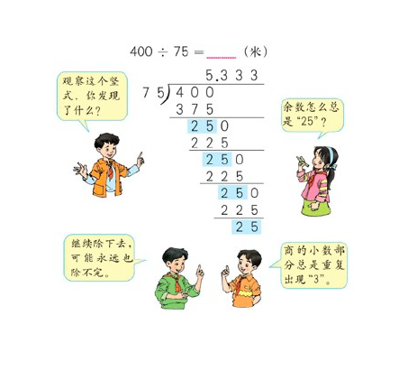

No.166 分数到小数
给定两个整数，分别表示分数的分子 numerator 和分母 denominator，以 字符串形式返回小数 。
如果小数部分为循环小数，则将循环的部分括在括号内。
如果存在多个答案，只需返回 任意一个 。
对于所有给定的输入，保证 答案字符串的长度小于 104 。
示例 1：
输入：numerator = 1, denominator = 2 输出："0.5"
示例 2：
输入：numerator = 2, denominator = 1 输出："2"
示例 3：
输入：numerator = 2, denominator = 3 输出："0.(6)"
示例 4：
输入：numerator = 4, denominator = 333 输出："0.(012)"
示例 5：
输入：numerator = 1, denominator = 5 输出："0.2"
提示：
-231 <= numerator, denominator <= 231 - 1denominator != 0
思路分析
这道题本质上就是要让我们用除法的思维去做题。
在我们做除法的时候，怎么判断重复循环的小数呢？
首先当然是进行预处理。包括以下几个步骤。
- 处理符号，将负号统一处理一下。因为两个正数相除显然比较符合人类的习惯。
- 将所有32位数字输入处理成64位，因为可能会超限。
- 处理整数部分，因为整数部分一般不参与到循环小数的范围内。
- 其他特殊情况。
在处理完上述步骤之后，我们得到了还是题目中的两个数字numerator和denominator。这两个数字仍然是被除数与除数的关系，只不过经过减去整数部分的处理之后，我们能确保numerator一定小于denominator。

如果没有思路可以看一下上面这张图。这张图基本上概括了本题所需的循环小数部分的数学知识。 可以看出，在除法的过程中，遇到除不尽的数字，我们一般是采用余数的方式，并且继续拿余数乘10之后再除。可以确定的是，只有在余数出现相同的情况下，余数之后的情况也会一模一样，也就是说，第一次出现相同的余数就是循环节的位置。
在此处，我们使用一个哈希表来存之前出现过的所有余数，并且在第二次出现余数的时候，标注循环节的位置，结束程序。
Rust代码
#![allow(unused)] fn main() { struct Solution; use std::collections::HashMap; impl Solution { pub fn fraction_to_decimal(numerator: i32, denominator: i32) -> String { let mut ret = String::new(); if (numerator as i64 * denominator as i64) < 0 { ret.push('-'); } let mut denominator = (denominator as i64).abs(); let mut numerator = (numerator as i64).abs(); let pre = numerator / denominator; numerator %= denominator; let mut map: HashMap<i64, i32> = HashMap::new(); ret.push_str(&pre.to_string()); if numerator == 0 { return ret; } ret.push('.'); let mut ws = ret.len() as i32; loop { if numerator == 0 { break; } if map.contains_key(&numerator) { ret.insert(*map.get(&numerator).unwrap() as usize, '('); ret.push(')'); break; } map.insert(numerator, ws); numerator *= 10; ret.push((('0' as u8) + (numerator / denominator) as u8) as char); numerator %= denominator; ws += 1; } ret } } }